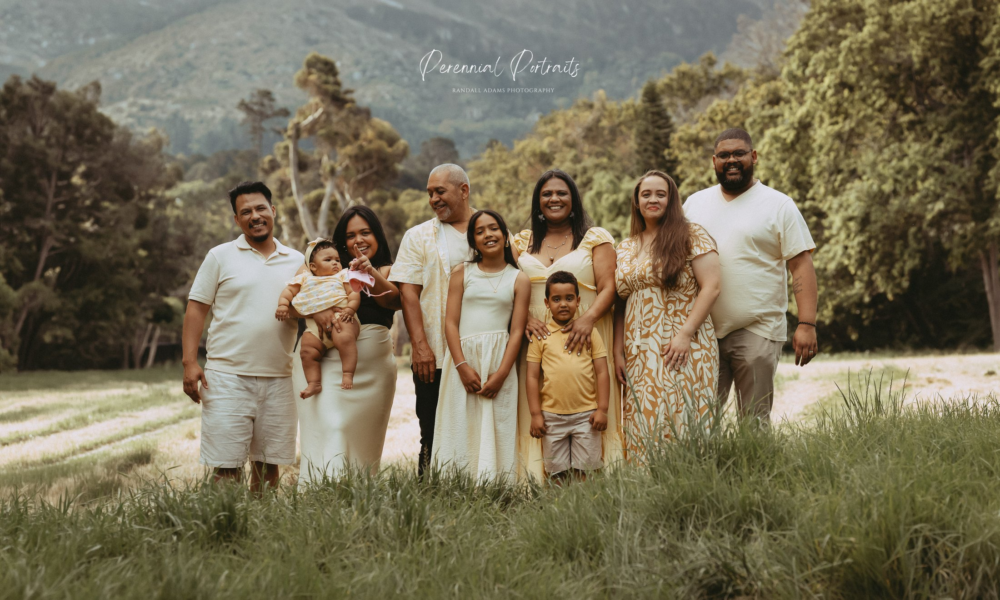

Look at this family for a moment. Nine people, gathered together in an open landscape. At first glance, it is a family portrait. But stay with it a little longer and the photograph begins to reveal more than the people standing in front of the camera.
There is a baby being held close, two young children standing in front, and adults gathered around them. The arrangement feels considered, but not stiff. Some faces turn towards the camera; others are caught in small exchanges with the people beside them. The older gentleman's smile as he looks towards the young girl near him is one of those details that gives the portrait a little life beyond the formal pose.
The colours also bring the group together. Cream, white and soft yellow sit naturally against the green grass and trees. In the distance, the mountain landscape falls gently out of focus. The setting gives the photograph a sense of place. It feels like a particular day, in a particular season, with this family standing together just as they are now.
That is what I find meaningful about this image. It does not show a family as an idea. It shows real people, at different stages of life, sharing the same frame.
A photograph holds more than a likeness
When we look at a family portrait, we often begin by recognising faces. We notice who is standing where, who is holding the youngest child, and how much the children have grown since the last photograph.
But a photograph can hold other things too: the way someone naturally leans towards another person, the expression that appears when they look at a child, the familiar closeness of people who have shared years together.
In this portrait, the youngest members stand in front while the adults form a loose gathering behind them. The baby is still small enough to be carried. The children are at ages when their expressions and personalities seem to change almost every week. The adults are there around them, part of the same family story, even though each person is living a different chapter.
Those details may seem ordinary now. With time, they may become the details a family looks for first.
The photograph will change meaning as the family changes
Today, the children in this image can look at the adults around them and know them as they are now. Years from now, they may look again and notice how young everyone seemed. They may remember a voice, a shared joke, a familiar way of standing, or ask someone to tell them more about the day the photograph was taken.
The baby being held will grow up. The little boy and girl will become older. The adults will move through more seasons of life. The family will change, as every family does.
But this photograph will keep one version of them together. It will hold their faces, their clothes, the landscape behind them and the small interactions that might otherwise become blurred by time.
That is one of the quiet gifts of a family photograph: it gives future generations something they can actually look at while they listen to the stories.
Don't wait for everything to be perfect
There is always a reason to postpone a family photograph. We wait for the children to get older, for a quieter season, for everyone to be available, or for the right occasion.
But life does not wait for everything to fall into place. Families change. Children grow. People get older. The moment we have today will never come around in quite the same way again.
The family you have now is worth remembering now.
And please, make sure you are in the photograph too. Mothers and fathers often spend so much time taking pictures of everyone else that they forget to stand alongside their children. One day, those children will want to see you there. They will want to remember your face, your smile and the way you stood beside them.
You are part of their story. Don't leave yourself out of it.
One day, the photograph will mean more
Imagine someone in this family opening an album many years from now. They find this portrait and begin pointing to the faces. They remember who was there. They notice how small the children were, how the adults looked, and how the landscape framed that afternoon.
Perhaps someone will tell the story of the day. Perhaps a detail in the photograph will bring back a memory that nobody had thought about for years.
A photograph cannot bring back a day. It cannot recreate a voice, a conversation or an embrace. But it can preserve the evidence that these people stood together, shared a life and belonged to one another.
And perhaps that is why family photographs matter so much.
Because one day, someone will look at that photograph and wish they could have just five more minutes with everyone in it.
And they will be glad that somebody thought to take it.
A thought worth keeping
Your family will change. The children will grow. Life will take everyone in different directions.
But a photograph can hold one chapter of your family's story long after that chapter has closed.
At Perennial Portraits, part of Randall Adams Photography, we believe family portraits are worth making because the people in them are worth remembering.
Not just for today, but for the generations who will one day look back.